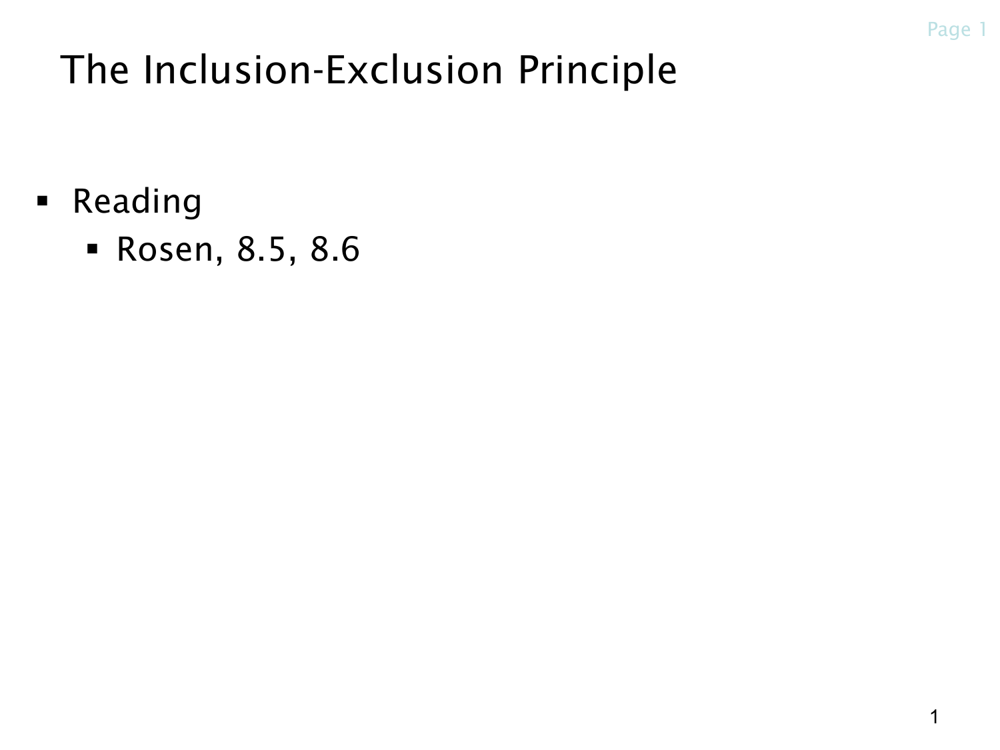

L1.8 · 第 1 页讲解原文
查看这一页课件

容斥原理：修正重复计数
这一页是本章标题页，主题是 The Inclusion-Exclusion Principle（容斥原理），对应课件列出的 Rosen 第 8.5、8.6 节。
容斥原理要解决的问题是：当几个集合有重叠时，怎样数出它们合起来一共有多少个不同元素？
例如，一个班里有 20 人选数学、15 人选计算机，其中 8 人两门都选。直接算 20+15 会把这 8 人算两次，所以至少选一门的人数是
20+15−8=27.
用集合符号写，就是
∣A∪B∣=∣A∣+∣B∣−∣A∩B∣.
这里，A∪B 表示属于至少一个集合的元素，A∩B 表示同时属于两个集合的元素，竖线 ∣A∣ 表示集合的元素个数。
“容”可以理解为先把各部分加进来，“斥”则是把重复计算的部分扣掉。集合更多时，扣除重叠又可能扣得过多，因此还需要加回来。学习这一章时，重点是理解每次加减究竟在修正哪些元素的计数次数。